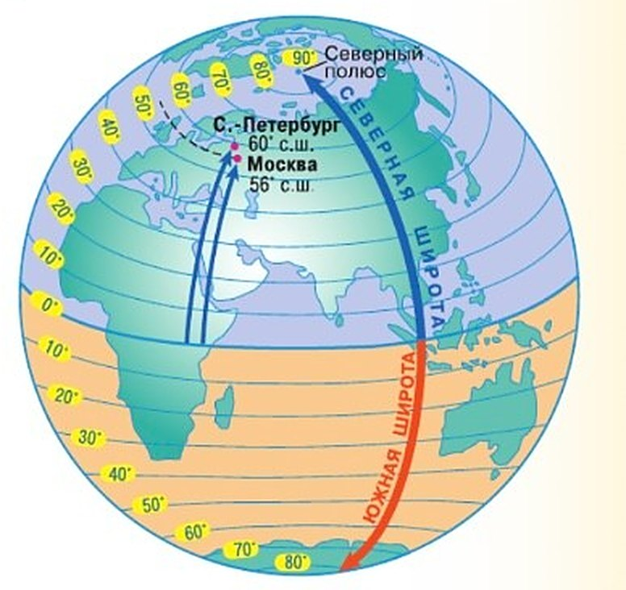

Для чего нужны географические координаты?
У каждой точки на Земле есть свой «адрес» из двух частей. В шахматах и морском бое клетку тоже называют двумя частями — буквой и цифрой: «Г4».
На Земле две части адреса — широта и долгота. Их находят по градусной сетке (§ 17). Широта говорит, на какой параллели точка, долгота — на каком меридиане. Где они пересекаются — там и точка. Это и есть географические координаты.
Зная координаты, можно найти любое место на карте и понять, где оно относительно других. И наоборот: первооткрыватели измеряли координаты приборами и так наносили на карту новые земли.
Координаты особенно нужны штурманам и военным. Штурман прокладывает путь корабля, самолёта, подводной лодки. По координатам ищут в океане тех, кто терпит кораблекрушение. Геологи, геодезисты и географы в экспедициях определяют координаты того, что изучают.
Сейчас координаты определяет прибор спутникового позиционирования — навигатор. Он ловит сигналы нескольких спутников Земли, узнаёт, где находится, и рисует на экране пройденный путь. Такие программы есть в компьютерах и телефонах.
Любая точка на земном шаре имеет свой географический адрес. Этот адрес состоит из двух частей. Когда вы играете в шахматы или морской бой, то тоже используете «адрес» клеточки из двух частей — буквы и цифры. Две части географического адреса — широта и долгота. Определить их нам позволяет градусная сетка. Широта показывает место точки на определённой параллели, а долгота — место этой же точки на конкретном меридиане. Место их пересечения и есть нужный нам адрес — географические координаты.
Зная географические координаты, можно найти любой объект на карте и определить его положение по отношению к другим объектам. И наоборот, можно нанести новый объект на карту, определив с помощью приборов его географические координаты, как это делали все первооткрыватели.
Уметь определять координаты по карте должен каждый человек. Для некоторых профессий это особенно важно, например для штурманов и военных. Штурманы прокладывают с помощью географических координат путь корабля, самолёта, подводной лодки. Иногда приходится искать в открытом океане терпящих кораблекрушение, а для этого необходимо знать место их нахождения. Геологи, геодезисты, географы, находясь в экспедиции, определяют координаты исследуемых ими объектов.
В настоящее время координаты на местности определяют с помощью прибора спутникового позиционирования. Этот прибор определяет своё местоположение, получая информацию с нескольких искусственных спутников Земли. При перемещении объекта по местности на мониторе такого навигатора вычерчивается траектория движения. Компьютерные программы для определения местонахождения любого объекта постоянно обновляют и совершенствуют. В повседневной жизни их разные версии закачивают на персональные компьютеры, мобильные телефоны и другие устройства.
Географические координаты любой точки на земном шаре — её широта и долгота.
Географические координаты необходимы для точного определения положения любого объекта на земном шаре.
1. Почему в географическом адресе две части? Не хватит ли одной широты?
2. Что общего у навигатора в машине и у первооткрывателей?
Что значит определить географическую широту?
Географическая широта — это сколько градусов от экватора до параллели, на которой стоит точка. У всех точек одной параллели широта одинаковая.
Считают от экватора. К северу от него — северная широта (с. ш.), к югу — южная (ю. ш.). Россия вся в Северном полушарии, поэтому у всех мест в России широта северная. Австралия — в Южном, там широта везде южная.
Чтобы узнать широту, ищем параллель точки и считаем от экватора строго вдоль меридиана — на север или на юг (рис. 46). На экваторе широта 0°, на полюсе — 90°. Чем дальше от экватора, тем широта больше. Поэтому у полюсов широты называют высокими, а у экватора — низкими.
Некоторые параллели на картах подписывают особо — это тропики и полярные круги. Ты знаешь их по § 10—11.
Для всех точек, лежащих на одной и той же параллели, широта одинакова. Широта отсчитывается от экватора. Все точки, располагающиеся к северу от экватора, имеют северную широту (с. ш.), а располагающиеся к югу от экватора — южную широту (ю. ш.).
Россия, например, целиком лежит в Северном полушарии. Поэтому все географические объекты в нашей стране имеют северную широту. Наоборот, в Австралии, лежащей в Южном полушарии, широта везде южная.
Для того чтобы узнать широту заданной точки, нужно найти параллель, на которой она расположена. Отсчёт начинаем от экватора, следуя строго вдоль меридиана на север или на юг (рис. 46). Все точки экватора имеют нулевую широту. Расстояние от экватора до полюса 90°. Чем больше мы будем удаляться от экватора, тем больше будет градусное расстояние до нужной нам параллели, тем больше будет её широта. Поэтому широты в полярных областях так и называются — высокие, а вблизи экватора — низкие.
Некоторые параллели специально подписывают и отмечают на картах. Это тропики и полярные круги.

▲ Найди на рисунке: от какой линии начинаются все стрелки? Какая из двух синих стрелок длиннее и почему?
Географическая широта — это расстояние в градусах от экватора до параллели, проведённой через заданную точку.
Северный тропик — это параллель 23,5° с. ш.
Южный тропик — это параллель 23,5° ю. ш.
Северный полярный круг — это параллель 66,5° с. ш.
Южный полярный круг — это параллель 66,5° ю. ш.
Определить географическую широту точки — это значит найти параллель, на которой она расположена.
3. Насколько Санкт-Петербург ближе к Северному полюсу, чем Москва, — в градусах и в километрах?
4. Почему широты у полюсов называют высокими?
5. У Северного и у Южного полюса широта 90°. Как их не перепутать?
Шаг за шагом. Определяем географическую широту
Найдём широту Санкт-Петербурга и Москвы.
Если точка на параллели. 1) Находим её на карте. 2) Смотрим, в каком полушарии — Северном или Южном. 3) Читаем подпись параллели. Санкт-Петербург стоит на параллели 60° к северу от экватора: его широта 60° с. ш. (рис. 46).
Если точка между параллелями. 1) Берём ближайшую параллель со стороны экватора. 2) Считаем градусы от неё до точки: между параллелями на карте 10°, значит, 1° — десятая часть промежутка. 3) Прибавляем.
Москва: ближайшая параллель со стороны экватора — 50° с. ш., до Москвы около 6°. Москва севернее 50°, поэтому 50° + 6° = 56° с. ш.
Определим широту Санкт-Петербурга и Москвы. Чтобы определить широту объекта, необходимо:
1. Найти объект на карте.
2. Определить, в каком полушарии, Северном или Южном, он находится.
3. Определить широту параллели, на которой расположен объект. (Так, Санкт-Петербург находится на параллели, отстоящей на 60° к северу от экватора, его широта 60° с. ш., см. рис. 46.)
Если объект расположен между параллелями, следует:
1. Определить широту ближайшей к объекту параллели со стороны экватора (см. шаги 1—3).
2. Определить число градусов от этой параллели до объекта. (Расстояние между параллелями на карте 10°, значит, 1° соответствует одна десятая часть этого расстояния.)
3. Прибавить получившееся число к широте найденной ближайшей параллели. (Так, ближайшая к Москве параллель со стороны экватора — 50° с. ш. Расстояние от этой параллели до Москвы около 6°. Мы уже знаем, что Москва расположена севернее параллели 50° с. ш., значит, её широта 50° + 6° = 56° с. ш.)
6. Найди по схеме «Шаг за шагом» широту Тольятти.
7. Почему от параллели «со стороны экватора» градусы прибавляют?
Итоги параграфа
- Что называется географическими координатами?
- Географическую широту отсчитывают от: а) Северного полюса; б) Южного полюса; в) экватора.
- Установите соответствие:
1) Экватор; 2) Северный полярный круг; 3) Южный полюс; 4) Северный тропик; 5) Южный тропик.
А) 90° ю. ш.; Б) 23,5° с. ш.; В) 0°; Г) 66,5° с. ш.; Д) 23,5° ю. ш. - Какие утверждения верны?
А. Северный тропик расположен дальше от Северного полюса, чем Северный полярный круг.
Б. Северный тропик расположен ближе к экватору, чем Южный полярный круг.
1) Верно только А; 2) Верно только Б; 3) Оба верны; 4) Оба неверны. - Вспомните, какие области нашей планеты ограничивают тропики и полярные круги.
- По политической карте полушарий в атласе определите, через какие страны проходят параллели: а) 10° с. ш.; б) 10° ю. ш. Результаты оформите в таблице.
| Широта | Страна |
|---|---|
| 10° с. ш. | … |
| 10° ю. ш. | … |
10° ю. ш.: в Америке — Перу, Бразилия, Боливия (самый север); в Африке — Ангола, ДР Конго, Замбия, Танзания, Малави; в Азии и Океании — Индонезия, Папуа — Новая Гвинея. На карте атласа могут быть видны не все.
Проверь себя
Москва
Вся Россия — в Северном полушарии.
Австралия
Лежит в Южном полушарии — широта везде южная.
Санкт-Петербург
60° с. ш.
Южный полюс
90° ю. ш.
Анталия
Около 37° с. ш. — Турция в Северном полушарии.
Южный тропик
23,5° ю. ш.
Тольятти
Около 53,5° с. ш.
Северный полярный круг
66,5° с. ш.
Экватор
От него ведут отсчёт.
Северный тропик
23,5° с. ш.
Южный полярный круг
66,5° ю. ш.
Северный полюс
90° с. ш. — дальше некуда.
Южный тропик
23,5° ю. ш.
Северный полярный круг
66,5° с. ш.
Южный полюс
90° ю. ш.
1. Из чего состоят географические координаты?
2. От чего отсчитывают географическую широту?
3. Какая широта у всех мест России?
4. Какая широта у Москвы?
5. Северный полярный круг — это параллель…
6. Как называют широты у полюсов?
Расскажи вслух
Зачем нужны координаты
- У каждой точки — «адрес» из двух частей, как клетка в морском бое: широта и долгота.
- По координатам находят место на карте; первооткрыватели так наносили новые земли.
- Штурманы, спасатели, геологи; сейчас — навигатор по сигналам спутников.
Что такое широта
- Расстояние в градусах от экватора до параллели точки.
- К северу — с. ш., к югу — ю. ш.; Россия — северная, Австралия — южная.
- От 0° на экваторе до 90° у полюсов: высокие и низкие широты.
Как найти широту по карте
- Найти точку, определить полушарие.
- На параллели — прочитать подпись: Санкт-Петербург 60° с. ш.
- Между параллелями — от ближайшей со стороны экватора прибавить градусы: Москва 50° + 6° = 56° с. ш.
Особые параллели
- Тропики — 23,5° с. ш. и 23,5° ю. ш.
- Полярные круги — 66,5° с. ш. и 66,5° ю. ш.
- Они ограничивают пояса освещённости (§ 11).